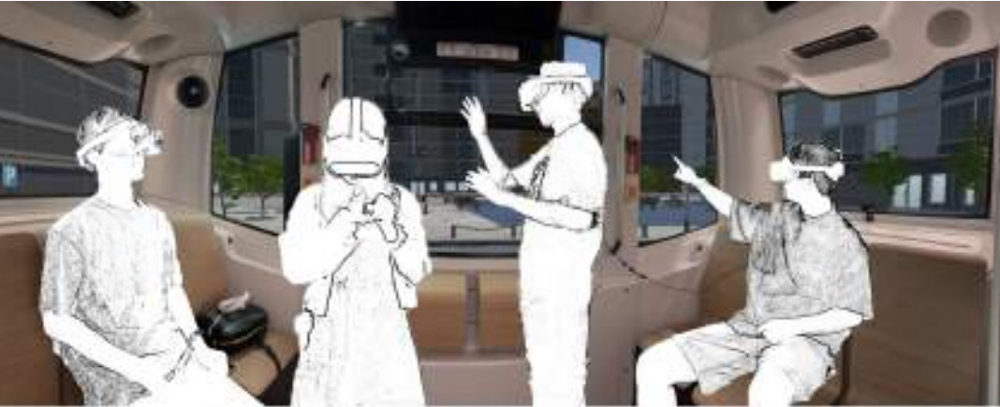
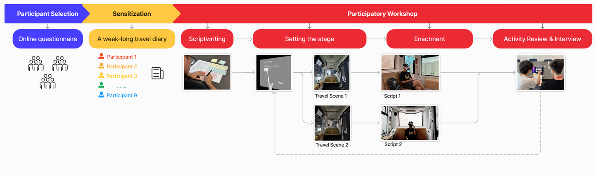
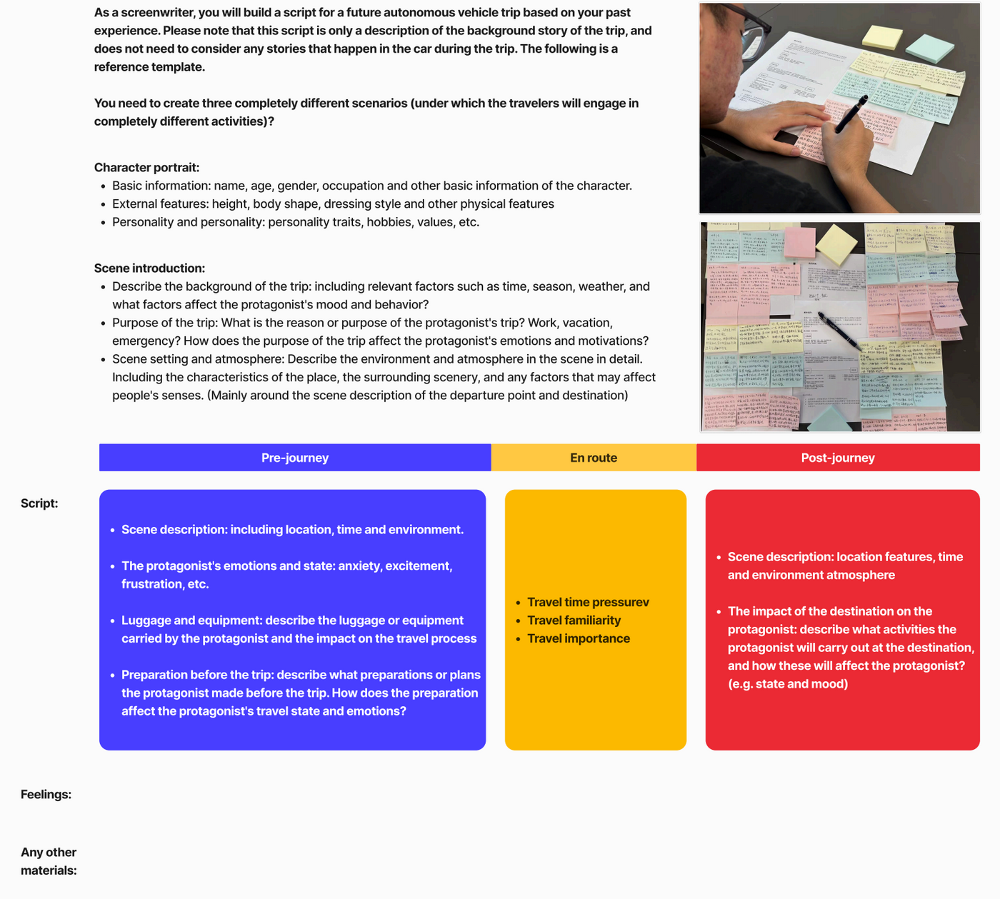
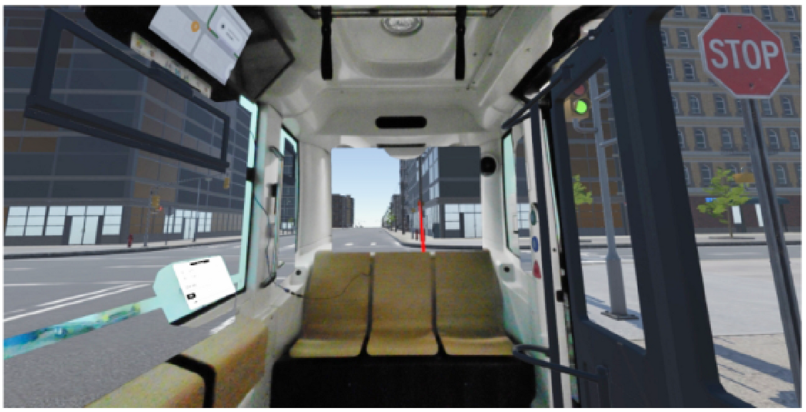
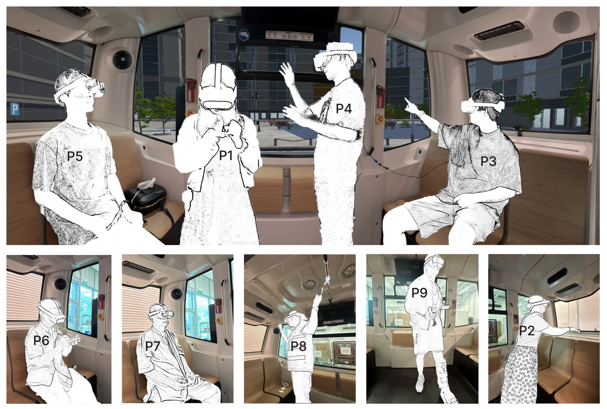

2025 / RtD
[RtD] Beyond Driving: Envisioning Life in Autonomous Vehicles

Autonomous vehicles are often described as creating “free time,” implying that people will simply fill travel time with non-driving-related activities (NDRAs). This project develops a set of experience-centered tools that let participants explore a different premise: travel is not a self-contained segment, but part of an activity sequence shaped by what happens before departure and after arrival. By making pre-journey and post-journey contexts explicit, we shift speculation away from generic “things to do in the car” toward plausible, situated accounts of how autonomous travel could reconfigure everyday life.

The work is anchored in a toolchain that moves from lived experience to future-making. Participants first use a Journey Canvas as sensitisation, capturing travel as a connected routine with timelines, prompts, and emotional traces. They then translate those experiences into a scriptwriting canvas that frames the “dramatic void” of the in-car segment. Finally, scenarios are enacted in a mixed-reality cabin, where projected road scenes and low-resolution white cards help participants test what NDRAs might feel like, where frictions arise, and what interaction resources would be needed. Together, these materials turn “future AV activities” into something participants can stage, adjust, and debate—rather than only describe.



Manuscript submitted to Travel Behaviour and Society
Keqi Chen, Xiao Xue, Runjia Tan, Chris Speed, Lee Kwan Min, Chen Lv